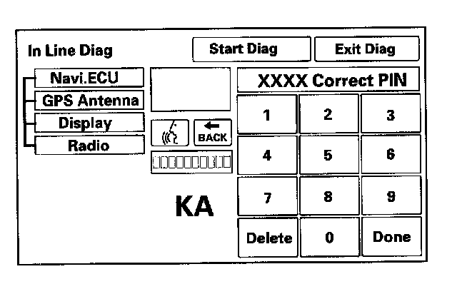

System always comes up in in-line diagnostic mode
System always comes up in in-line diagnostic mode
1. When a navigation control unit is powered up for the first time at the factory, the "factory diagnosis" screen (In Line Diag) appears. Normally the factory performs the steps necessary to verify proper operation and terminate the "factory diagnostic." Until the proper confirmation sequence is performed, the screen will appear every time the vehicle is started.
2. Follow the steps to prevent the screen from showing up in the future:
- Hold down the buttons (Menu+Map/Guide+ Cancel) for about 5 seconds (the "Select Diagnosis Items" screen will appear).
- Hold down the Map/Guide button for 5 - 10 seconds (A screen with a "Complete" button, will appear).
- Touch "Complete," and then the "Return" button (the system may re-boot).
- Restart the vehicle, and confirm normal operation by completing the "PDI of the navigation system" Service Bulletin.